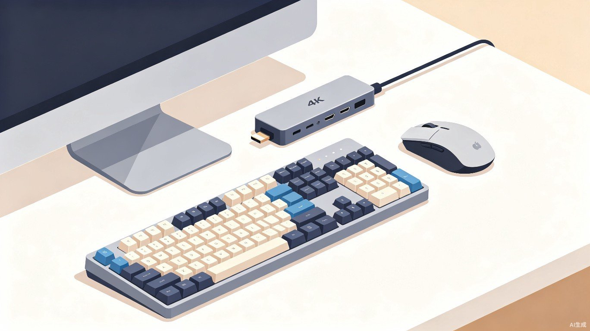

挑选最合适的周边设备，打造理想桌面

Mac mini 本身只是一台主机，想要真正投入使用，还需要搭配显示器、键盘、鼠标等外设。此外，根据个人需求，扩展坞、外接存储、音箱等配件也能显著提升使用体验。本页将按照不同类别，为你推荐值得考虑的配件方案。
Mac mini 没有自带屏幕，因此显示器是你必须优先考虑的配件。macOS 对高分辨率屏幕支持极佳，强烈建议至少选择 4K 分辨率 的显示器，否则文字和界面可能出现模糊发虚的情况。
| 型号 | 价格区间 | 分辨率 | 主要接口 | 适用人群 |
|---|---|---|---|---|
| Apple Studio Display | 约 11,499 元起 | 5K (5120×2880) | 雷雳 3 (上行)、USB-C ×3 | 设计师、追求最佳色彩与整合体验的用户 |
| LG UltraFine 5K | 约 9,000 元左右 | 5K (5120×2880) | 雷雳 3 ×3、USB-C | 专业设计、视频后期、与 Mac 深度整合 |
| LG UltraFine 4K (23.7/24 英寸) | 约 5,000–6,000 元 | 4K (3840×2160) | 雷雳 3 ×2、USB-C ×3 | 预算有限但仍希望获得 Mac 原生体验的用户 |
| Dell U2723QE / U2723QX | 约 3,500–4,500 元 | 4K (3840×2160) | HDMI、DP、USB-C (90W 供电)、USB-A | 办公人群、需要丰富接口和护眼功能 |
| 红米 4K 27 英寸 / 小米 4K | 约 1,500–2,500 元 | 4K (3840×2160) | DP、HDMI、USB-C | 学生、普通家庭用户、追求性价比 |
预算充足且注重色彩：优先考虑 Apple Studio Display 或 LG UltraFine 5K，两者均支持 P3 广色域，且与 macOS 系统级整合良好。
办公为主、接口要多：Dell U 系列显示器提供 USB-C 一线连（同时传输视频和为笔记本供电），且具备多种物理接口，非常适合办公桌面。
追求性价比：红米/小米 4K 显示器在千元价位提供了 4K 分辨率和不错的色准，是入门用户的首选。
Mac mini 不附带输入设备，你可以根据自己的习惯和预算选择合适的键盘与鼠标。macOS 对苹果自家的妙控系列支持最好，但第三方设备也完全可用。
如果你偏好机械键盘的手感，市面上有大量兼容 Mac 的产品。选购时建议关注以下几点：
| 连接方式 | 优点 | 缺点 | 适合场景 |
|---|---|---|---|
| 蓝牙 | 桌面整洁、无线缆束缚、多设备切换 | 偶有延迟或干扰、需充电/换电池 | 日常办公、轻度创作 |
| 有线 (USB-C/Lightning) | 零延迟、无需充电、即插即用 | 桌面线缆较多 | 游戏、专业设计、追求绝对稳定 |
| 2.4G 无线 | 延迟低、连接稳定 | 需占用 USB 接收器 | 游戏、对延迟敏感的场景 |
Mac mini 的接口配置相对丰富，但类型和数量未必能满足所有人的需求，尤其是当你有大量 USB-A 设备或需要多显示器输出时，扩展坞就显得非常必要。
| 型号 | 价格区间 | 核心接口 | 适用场景 |
|---|---|---|---|
| CalDigit TS4 | 约 3,000–3,500 元 | 雷雳 4、USB-A ×5、USB-C、DP、2.5GbE、SD 卡槽、音频 | 专业工作站、多设备连接、最高扩展性 |
| 贝尔金 Connect Pro 雷雳 4 扩展坞 | 约 2,500–3,000 元 | 雷雳 4、USB-A、USB-C、HDMI、SD 卡槽、音频 | 办公桌面、对品牌稳定性和兼容性要求高 |
| 绿联 雷雳 4 / USB-C 扩展坞 | 约 800–1,500 元 | USB-C、USB-A、HDMI、SD/TF 卡槽、网口 | 日常扩展、性价比优先 |
| 奥睿科 (ORICO) 扩展坞 | 约 300–800 元 | USB-C、USB-A、HDMI、网口、SD 卡槽 | 基础扩展、预算有限 |
创意工作者（摄影师/视频剪辑）：选择带有高速 SD/TF 卡槽、多个雷雳/USB-C 端口和 2.5GbE 网口的扩展坞，如 CalDigit TS4。
普通办公用户：绿联或贝尔金的中端扩展坞即可满足外接显示器、U 盘、网线等日常需求。
仅需要转接单个设备：购买单一功能的 USB-C 转 HDMI/USB-A 转接线或小型转接器即可，无需大型扩展坞。
Mac mini 的 SSD 存储在购入时确定后不可自行升级（芯片焊接），因此如果后期存储空间不足，外接存储设备是最直接的解决方案。
外接 SSD 速度快、体积小巧，是扩展存储和备份数据的首选。连接时建议优先使用 雷雳/USB-C 接口以获得最佳传输速度。
| 型号 | 容量 | 价格区间 | 特点 |
|---|---|---|---|
| 三星 T7 Shield / T9 | 500GB–4TB | 约 600–3,000 元 | 速度快、三防设计（Shield）、品牌可靠 |
| SanDisk Extreme Portable SSD | 500GB–4TB | 约 600–2,800 元 | 防水防尘防摔、适合户外或移动使用 |
| 致钛 (ZhiTai) Jupiter 2000 等 | 512GB–2TB | 约 400–1,500 元 | 国产方案、性价比高、日常够用 |
| 三星 T7 Touch | 500GB–2TB | 约 700–2,000 元 | 支持指纹加密、安全性高 |
如果你有大量数据需要集中管理，或者希望在多台设备间共享文件，NAS（网络附属存储）是一个值得考虑的中长期方案。
NAS 可通过千兆/2.5GbE 网线连接到 Mac mini，在局域网内像本地磁盘一样访问文件，同时也支持远程访问和自动备份（Time Machine）。
Mac mini 没有内置扬声器，因此你需要外接音箱或耳机才能听到声音。
Mac mini 没有自带摄像头，如果你有视频会议或直播需求，需要额外购买。
Mac mini 没有内置电池，突然断电可能导致数据丢失或文件损坏。如果你所在地区电压不稳或偶有停电，建议配备一台 UPS。
为 Mac mini 选择配件时，建议按照 显示器 → 键盘鼠标 → 扩展坞 → 存储/其他 的优先级逐步完善桌面。